TÀI LIỆU HƯỚNG DẪN SỬ DỤNG TOÀN DIỆN HỆ THỐNG XẾP LỊCH T.I.M.E.S. SYSTEM V3
1. GIỚI THIỆU TỔNG QUAN & KIẾN TRÚC HỆ THỐNG
Phần mềm T.I.M.E.S. System (Treatment Intelligent Management & Efficiency Scheduler) là giải pháp chuyên sâu giúp tự động hóa 100% quy trình xếp lịch thủ thuật Y học cổ truyền & Phục hồi chức năng tại Bệnh viện Than - Khoáng sản Cơ sở 2.
Ưu điểm vượt trội của phiên bản v3.28:
- Edge SQLite D1 Database: Lưu trữ phi tập trung trên mạng lưới Cloudflare toàn cầu, độ trễ API chỉ 10-25ms.
- Offline-First Engine: Hoạt động bền bỉ, 0ms phản hồi với bộ nhớ đệm LocalStorage, không lo gián đoạn khi đứt mạng.
- Dual-Mode Reordering: Hỗ trợ cả kéo thả
☰SortableJS và bấm nút mũi tên nhanh▲/▼trên toàn bộ 5 bảng danh mục.
2. ĐĂNG NHẬP, BẢO MẬT & ĐIỀU HƯỚNG GIAO DIỆN
Hệ thống áp dụng cơ chế xác thực đa phân quyền bảo mật cao. Người dùng cần đăng nhập tài khoản được cấp để truy cập các tính năng phù hợp.
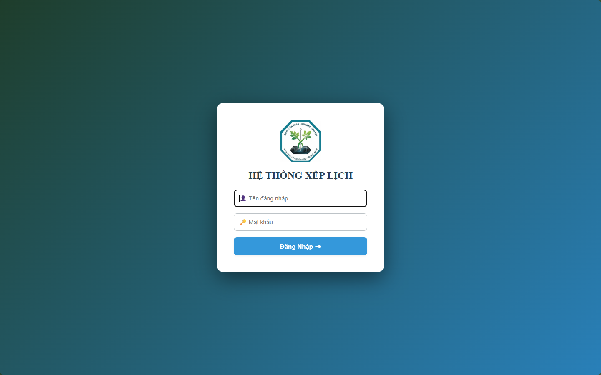
Các bước đăng nhập:
- Nhập Tên đăng nhập (Ví dụ:
admin_yhcthoặc tài khoản cá nhân). - Nhập Mật khẩu và bấm phím
Enterhoặc nhấp nút Đăng Nhập ➔. - Hệ thống xác thực và nạp quyền hạn tương ứng theo phân cấp (Admin hoặc User).
🟢 Cloudflare Main để mở menu chuyển đổi máy chủ dự phòng hoặc bấm ⚡️ Xuất Dự Phòng để tải file backup .json chỉ trong 1 giây.
3. BẢNG ĐIỀU KHIỂN TRANG CHỦ (DASHBOARD)
Dashboard cung cấp bức tranh tổng thể thời gian thực về khối lượng điều trị, nhân lực và tiến độ xếp lịch trong ngày.

Các khối thông tin quan trọng:
- Chỉ số tổng quan: Số Bác sĩ/KTV đi làm, Tổng số BN, Tổng số ca thủ thuật chỉ định, Số ca đã xếp lịch thành công, Số ca rớt.
- Tải trọng nhân viên: Khối lượng công việc phân bổ cho từng Bác sĩ & Kỹ thuật viên.
- Phân bố thủ thuật YHCT / PHCN: Thống kê số lượng từng kỹ thuật (Điện châm, Thủy châm, Điện xung, Parafin, Sóng ngắn, Tập trợ giúp...).
- Biểu đồ Chart.js: Biểu đồ ngày công làm việc và biểu đồ xu hướng thủ thuật qua các tháng.
4. KHỐI QUẢN LÝ DANH MỤC HỆ THỐNG
4.1 Quản Lý Danh Mục Máy Móc
Quản lý toàn bộ 63+ máy móc, thiết bị điều trị hiện có tại khoa.

- Thêm máy mới: Nhập Tên loại máy, Mã ký hiệu (VD:
Máy DC MS: 0972), Số lượng, Trạng thái (Sẵn sàng,Hỏng,Bảo trì) và bấm Thêm. - Sắp xếp thứ tự: Kéo thả nút
☰hoặc bấm nút▲/▼để thay đổi độ ưu tiên của máy trong 0.01 giây. - Xóa máy: Bấm nút Xóa màu đỏ đối với máy không còn sử dụng.
4.2 Quản Lý Danh Mục Thủ Thuật
Cấu hình thông số kỹ thuật chuẩn y khoa cho từng thủ thuật:
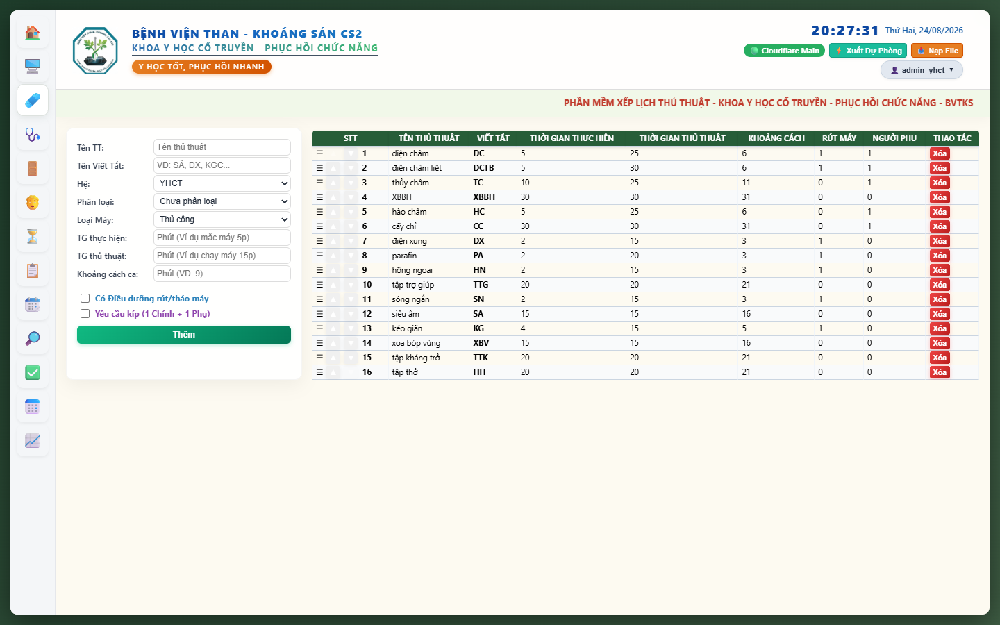
| Thông số | Ý nghĩa chuyên môn | Ví dụ cấu hình |
|---|---|---|
| Tên Viết Tắt | Mã định danh hiển thị trên y lệnh & thẻ Thứ 7 | DC (Điện châm), TC (Thủy châm), DX (Điện xung) |
| TG Thực Hiện | Thời gian Bác sĩ/KTV trực tiếp thao tác | 5 phút châm kim, 2 phút mắc máy |
| TG Thủ Thuật | Thời gian máy chạy duy trì trên bệnh nhân | 25 phút lưu kim, 15 phút điện xung |
| Khoảng Cách | Thời gian nghỉ ngơi an toàn giữa 2 ca của 1 bệnh nhân | 6 phút, 11 phút, 31 phút |
| Có ĐD rút máy | Cho phép Điều dưỡng rút máy giải phóng KTV chính | Tích chọn cho các ca chạy máy độc lập |
4.3 Quản Lý Danh Mục Nhân Sự
Quản lý danh sách Bác sĩ, KTV, Điều dưỡng, ca trực và phân quyền kỹ năng:
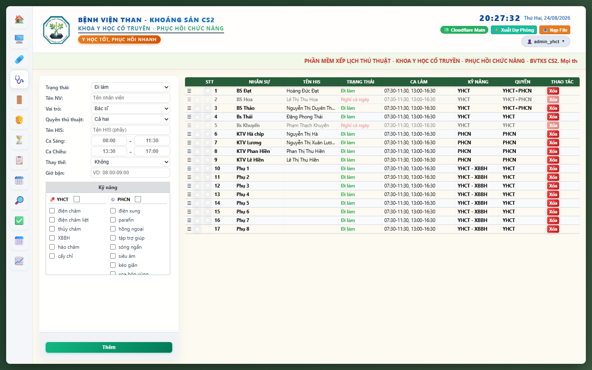
4.4 Quản Lý Danh Mục Phòng
Định nghĩa 6 phòng thủ thuật, Bác sĩ/KTV phụ trách, trang thiết bị và mã giường:
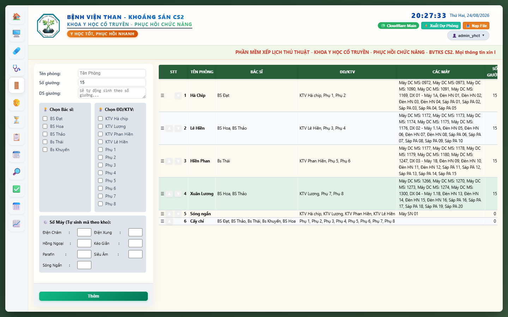
5. KHỐI TIẾP NHẬN & QUẢN LÝ BỆNH NHÂN
5.1 Tiếp Nhận & Lọc Bệnh Nhân
Tiếp nhận bệnh nhân hàng ngày với giao diện chọn nhanh thủ thuật và bộ lọc thông minh:
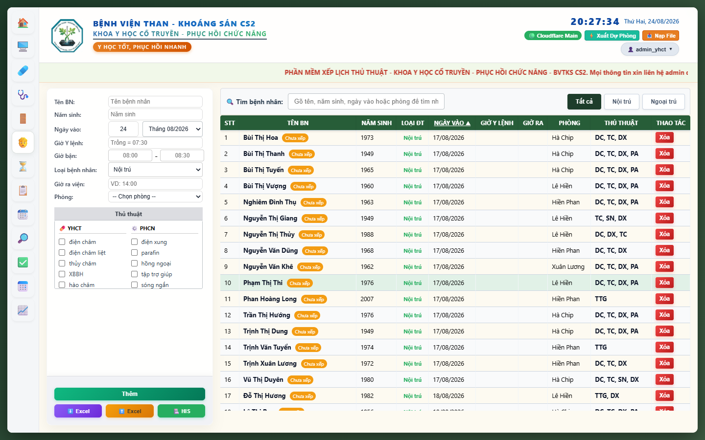
- Chọn nhanh thủ thuật: Tích chọn trực tiếp các ô checkbox trong 2 bảng Hệ YHCT và Hệ PHCN.
- Sắp xếp theo Ngày Vào: Bấm vào tiêu đề cột
NGÀY VÀO ▲để đảo chiều sắp xếp linh hoạt. - Đồng bộ HIS & Excel: Hỗ trợ nút
⬇ Excel (Nhập),⬆ Excel (Xuất)và🏥 HIS.
5.2 Quản Lý Giờ Bận & Ra Viện
Khai báo giờ bận của nhân viên, bệnh nhân và giờ ra viện để thuật toán tự động né tránh:
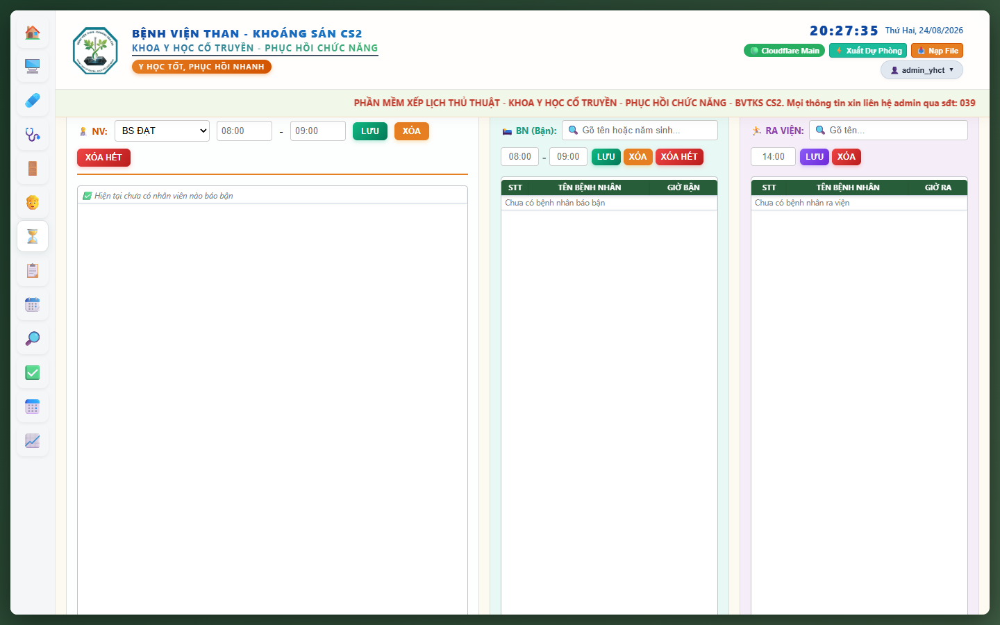
6. PHÂN HỆ XẾP LỊCH TỰ ĐỘNG NGÀY THƯỜNG (CORE ENGINE)
6.1 Quy Trình Xếp Lịch Tổng & Chọn 3 Kịch Bản
Khi bấm nút CHẠY XẾP LỊCH TỔNG, hộp thoại chọn chiến lược sẽ xuất hiện:

• Kịch bản 1: Tối ưu tối đa: Ưu tiên máy hiếm, khoảng cách tối thiểu, hoàn thành sớm.
• Kịch bản 2: Cân bằng tải: Phân bổ đều việc cho tất cả nhân viên khi đông bệnh nhân.
• Kịch bản 3: Dự phòng: Giữ lại 20% máy dự phòng khi có thiết bị gặp sự cố.
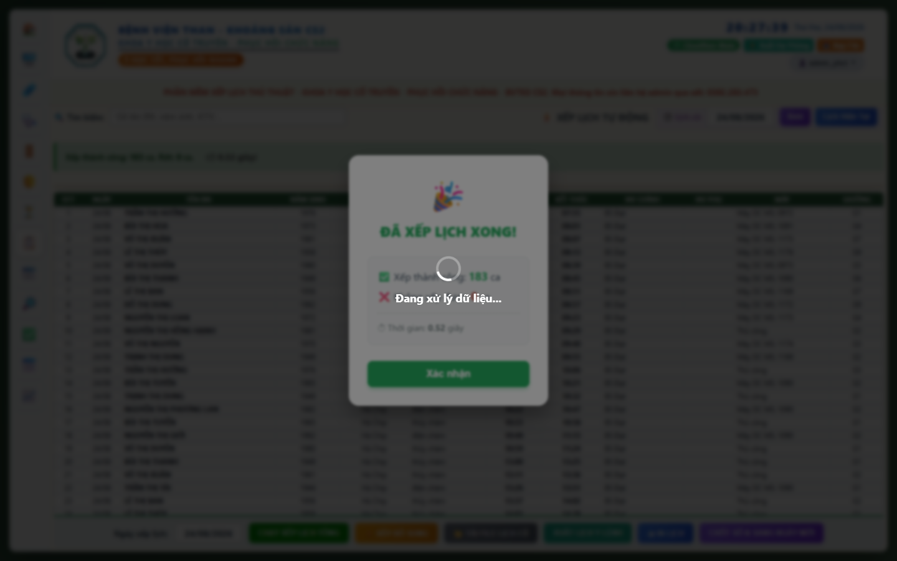
6.2 Ma Trận Lịch Trình Chi Tiết
Bảng ma trận hoàn chỉnh thể hiện chi tiết từng ca thủ thuật từ 07:30 đến 16:30:

6.3 Các Chức Năng Bổ Trợ Xếp Lịch
- ⚡ XẾP BỔ SUNG: Xếp thêm bệnh nhân mới đến muộn vào các khe trống mà không làm đổi lịch các ca trước.
- 📂 TẢI FILE LỊCH CŨ: Xem lại hoặc chỉnh sửa lịch trình các ngày trước đó.
- 📤 XUẤT LỊCH Y LỆNH: Xuất file Excel chuẩn y lệnh bệnh viện.
- 🖨 IN LỊCH: Xuất bản in khổ A4/A3 hoặc phiếu in theo từng phòng.
- 🟣 CHỐT SỔ & SANG NGÀY MỚI: Lưu trữ lịch vào cơ sở dữ liệu và tự động chuẩn bị dữ liệu cho ngày hôm sau.
7. PHÂN HỆ XẾP LỊCH THỨ 7
Xếp lịch chuyên biệt cho ca trực sáng ngày Thứ 7 theo mô hình thẻ bệnh nhân (Card View):

- Tích chọn lại danh mục thủ thuật làm vào Thứ 7 cho từng bệnh nhân.
- Cài đặt Giờ sẵn sàng (Giờ SS) (VD: 07:30, 08:00) theo giờ bệnh nhân đến viện.
- Khai báo danh sách Bác sĩ/KTV trực qua nút
👥 Nhân sự đi làm. - Bấm nút ▶ XẾP LỊCH THỨ 7 để tiến hành phân bổ lịch.
8. CÁC TIỆN ÍCH KIỂM SOÁT & TRA CỨU THÔNG MINH
8.1 Tiện Ích Kiểm Tra Lỗi & Xung Đột Lịch
Tự động phát hiện và cảnh báo mọi xung đột tiềm ẩn trong bảng lịch:
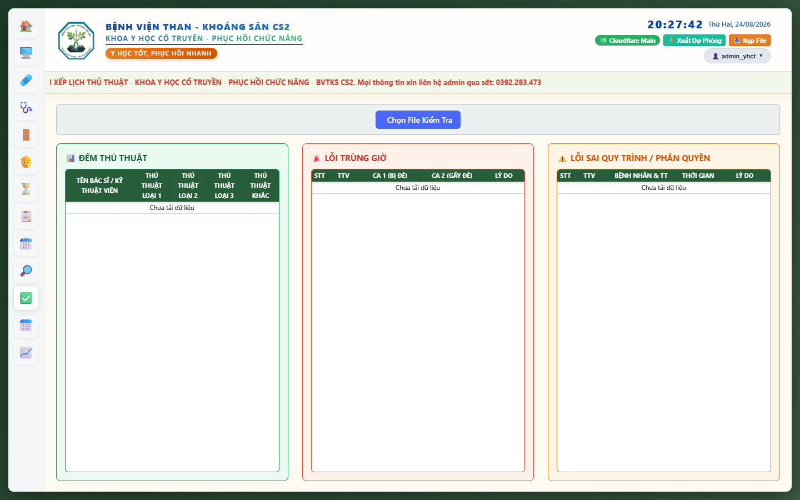
8.2 Tiện Ích Tìm Khung Giờ Rảnh
Hỗ trợ nhân viên y tế tìm ngay Bác sĩ hoặc Máy móc đang rảnh để tiếp nhận ca phát sinh:
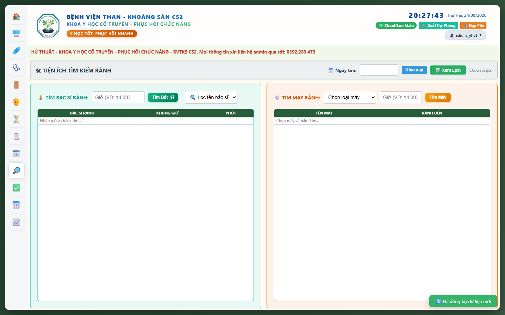
9. KHỐI BÁO CÁO, CHẤM CÔNG & THỐNG KÊ TỔNG HỢP
9.1 Bảng Chấm Công Điện Tử
Chấm công trực tiếp theo tháng, tự động tính tổng công và đồng bộ Cloudflare D1:
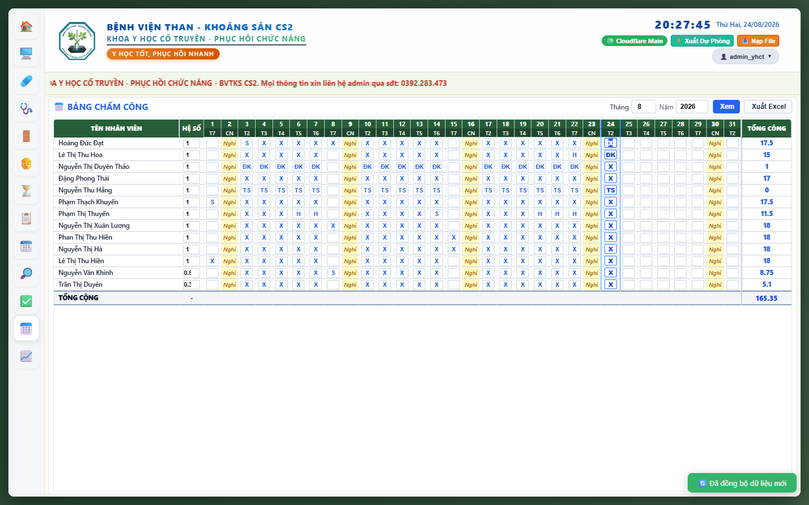
9.2 Thống Kê Tổng Hợp & Phân Tích KPI
Thống kê sản lượng thủ thuật theo Loại 1, 2, 3 và tính tiền công thực lĩnh:
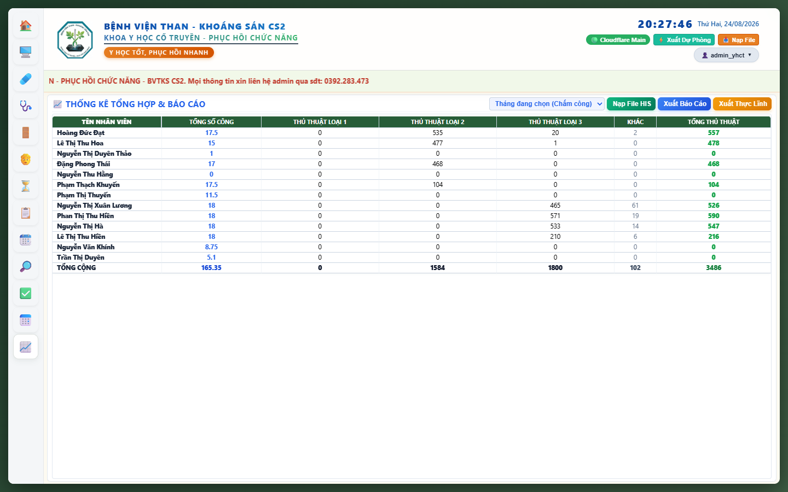
10. PHÂN HỆ QUẢN TRỊ HỆ THỐNG (ADMINISTRATION)
10.1 Cài Đặt Hệ Thống & Trọng Số Thuật Toán
Tùy chỉnh thông báo chạy, giờ chốt sổ tự động và hệ số phạt của thuật toán:
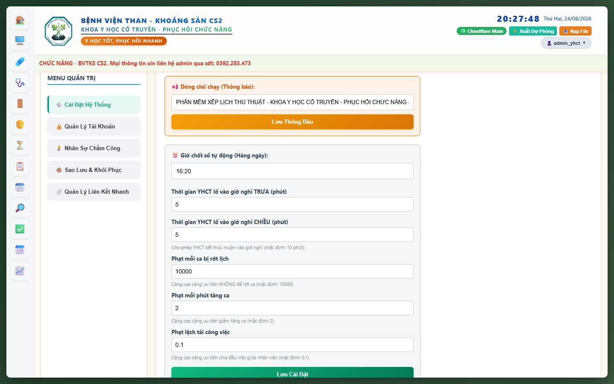
10.2 Quản Lý Tài Khoản & Phân Quyền Chi Tiết
Thêm tài khoản mới và cấp quyền truy cập theo từng tab chức năng:
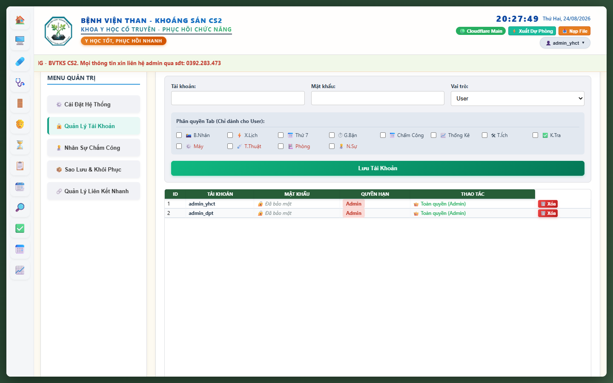
10.3 Sao Lưu, Khôi Phục & Tự Động Đẩy Google Drive
Cấu hình sao lưu tự động về máy tính và đẩy lên Google Drive vào 17:00 hàng ngày:
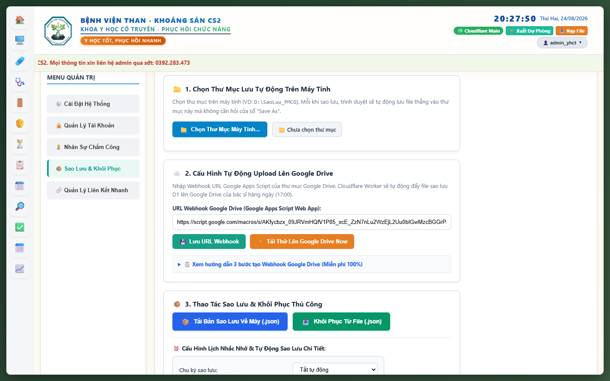
11. QUY TRÌNH XỬ LÝ SỰ CỐ & SAO LƯU DỰ PHÒNG KHẨN CẤP
1. Hệ thống tự động chuyển sang chế độ Ngoại tuyến (Offline-First). Mọi dữ liệu đã có vẫn hoạt động bình thường trên máy tính.
2. Bấm nút
⚡️ Xuất Dự Phòng trên Header để lưu file backup .json về ổ cứng.
3. Khi có mạng trở lại, hệ thống sẽ tự động đồng bộ về Cloudflare D1.
12. BẢNG PHÍM TẮT & MẸO VẬN HÀNH TỐI ƯU
| Thao tác | Phím tắt / Mẹo | Tác dụng |
|---|---|---|
| Đăng nhập nhanh | Nhập mật khẩu + bấm Enter |
Đăng nhập ngay không cần click chuột |
| Về Trang Chủ | Nhấp vào Logo Bệnh viện | Quay về Dashboard tức thì |
| Sắp xếp dòng | Bấm giữ ☰ hoặc bấm ▲/▼ |
Đổi thứ tự bảng trong 0.01 giây |
| Chạy xếp lịch Turbo | Bấm CHẠY XẾP LỊCH TỔNG -> Kịch bản 1 |
Xếp 180+ ca trong 0.3s |
| Xếp ca muộn | Bấm ⚡ XẾP BỔ SUNG |
Chèn thêm ca mới, giữ nguyên lịch cũ |
| Sao lưu khẩn cấp | Bấm ⚡️ Xuất Dự Phòng trên Header |
Tải file .json trong 1 giây |
KHOA Y HỌC CỔ TRUYỀN - PHỤC HỒI CHỨC NĂNG | BVTKS CS2
Hotline hỗ trợ kỹ thuật: 0392.283.473 | Website: xeplichthuthuat.io.vn